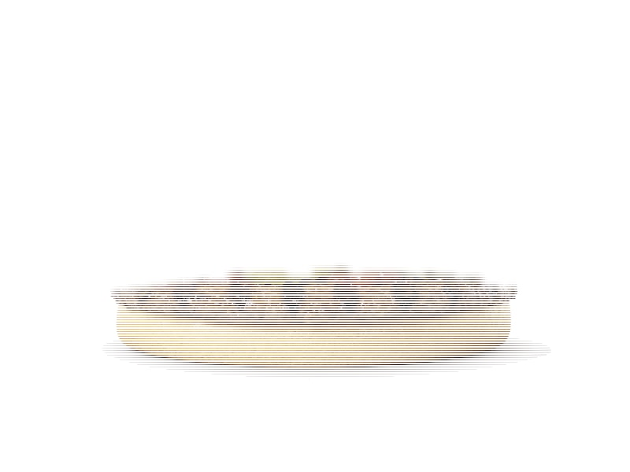

Fast food
Whopper (styl)
Whopper (styl): 12 g białka, 265 kcal, 22 g węglowodanów i 15 g tłuszczu na 100 g. Kategoria: Fast food.
Kalorie265 kcalna 100 g
Białko / proteiny12 g
Węglowodany22 g
Tłuszcz15 g
Cena (szac.)~3,77 złza 100 g
Ceny zaktualizowano: maj 2026 (szacunek — ceny w popularnych supermarketach)
Porcja: sztuka (270g)
| Kalorie | 716 kcal |
|---|---|
| Białko | 32.4 g |
| Węglowodany | 59.4 g |
| Tłuszcz | 40.5 g |
| Cena (szac.) | ~10,19 zł |
Szczegółowe składniki odżywcze na 100 g
| Wartość energetyczna (kalorie) | 265 kcal |
|---|---|
| Białko (proteiny) | 12 g |
| Węglowodany | 22 g |
| Tłuszcz | 15 g |
| Tłuszcze nasycone | 6 g |
| Tłuszcze nienasycone | 9 g |
| Witaminy i minerały | Żelazo, Cynk, Sód |
| Współczynnik kcal / 1 g białka | 22.1 |
| Cena produktu (szac. za 100 g) | ~3,77 zł |
| Cena za 100 g białka (szac.) | ~31,45 zł |